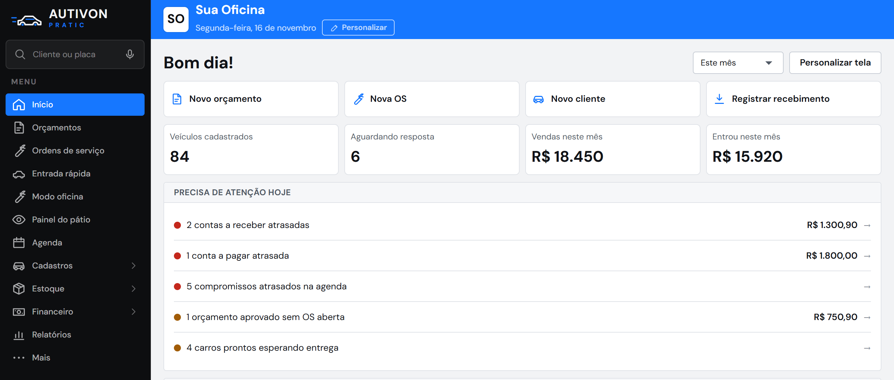
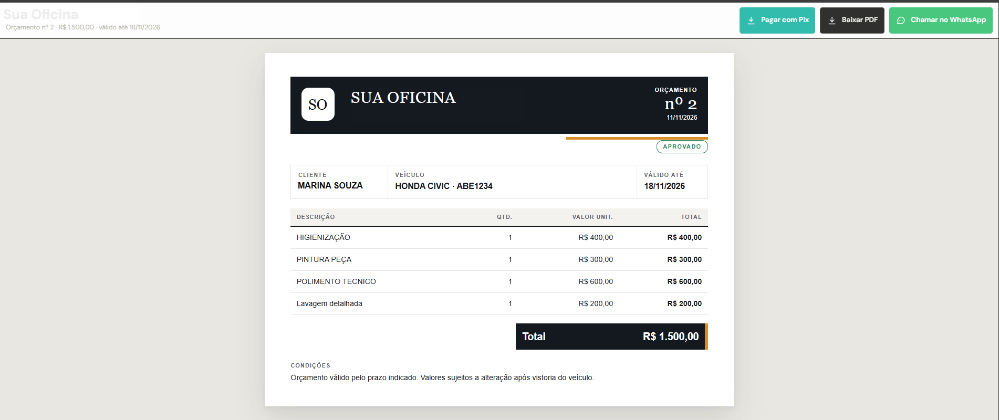

Portfólios
Mostre seus trabalhos, experiências e serviços em um só lugar. Ideal para psicólogos, personal trainers e profissionais autônomos.
Portfólio profissional · Cartão de visita digital · Links para a bio
Desenvolvedor Java Júnior · Full Stack
Crio sistemas web completos, do banco de dados à tela. Desenvolvi e mantenho em produção o Autivon, um sistema de gestão para oficinas e estética automotiva feito com Java, Spring Boot, PostgreSQL e React. Também crio sites para pequenos negócios e profissionais.
Sobre mim
Sou formado em Análise e Desenvolvimento de Sistemas pela Universidade Positivo e moro em Curitiba. Meu foco é desenvolvimento back-end com Java e Spring Boot, mas também construo o front-end com React e TypeScript.
Trabalho com suporte técnico a um sistema de gestão empresarial na WVetro. No dia a dia, entendo o problema do cliente, levanto os requisitos e encaminho para a equipe de desenvolvimento pelo Jira. Essa vivência me ensinou a pensar no usuário antes de escrever a primeira linha de código.
Busco uma oportunidade como desenvolvedor júnior para crescer em um time e contribuir com sistemas bem feitos, seguros e fáceis de usar.
Projeto em destaque
Sistema SaaS de gestão para oficinas, estética automotiva e funilaria. Projeto próprio, criado do zero e em produção, para cuidar de orçamentos, ordens de serviço, agenda e financeiro.


Serviços
Crio sites profissionais para empresas, profissionais autônomos e empreendedores que querem apresentar melhor o seu trabalho na internet. Me conte a sua necessidade e eu crio do seu jeito.
Mostre seus trabalhos, experiências e serviços em um só lugar. Ideal para psicólogos, personal trainers e profissionais autônomos.
Portfólio profissional · Cartão de visita digital · Links para a bio
Apresente seus produtos com fotos, preços e tamanhos, e receba os pedidos pelo WhatsApp.
Lojas de roupas · Catálogo de produtos · Cardápio digital
Apresente sua empresa e seus serviços e facilite o contato com novos clientes.
Site de apresentação · Agendamento online · Página de imóveis
Divulgue um lançamento e receba os interessados direto no WhatsApp.
Cursos · Eventos · Promoções
Habilidades
Java, Spring Boot, Spring Security, Spring Data JPA, APIs REST, JUnit
React, TypeScript, JavaScript, HTML5, CSS3
PostgreSQL, MySQL, SQL, Flyway
Docker, Linux, servidor VPS, HTTPS, backup em nuvem
Git, GitHub, Jira, AnyDesk
Python, C++
Experiência e formação
Suporte a usuários de um sistema de gestão empresarial (ERP) por telefone, chat e acesso remoto. Análise de chamados, definição de prioridades e abertura de demandas no Jira para a equipe de programação, com os requisitos para a correção.
Criação e manutenção de um sistema SaaS em produção, do banco de dados ao servidor.
Universidade Positivo
Inglês · Influx (concluído em 2020)
Contato
Estou aberto a vagas de desenvolvedor júnior e a novos projetos de sites. Fale comigo pelo canal que preferir.